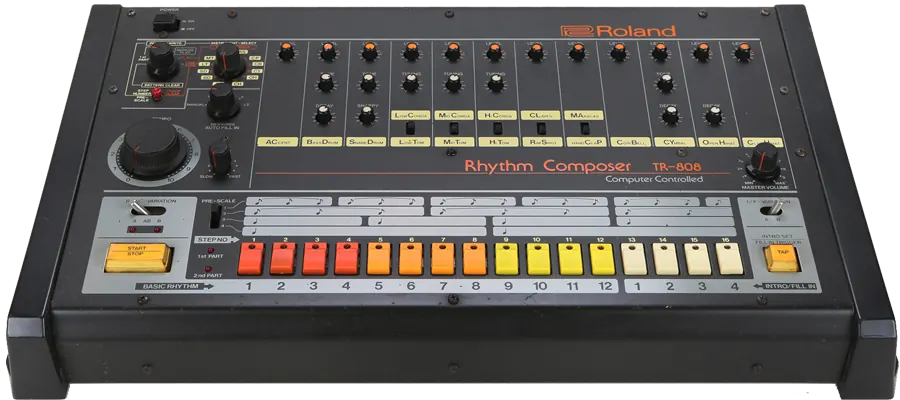
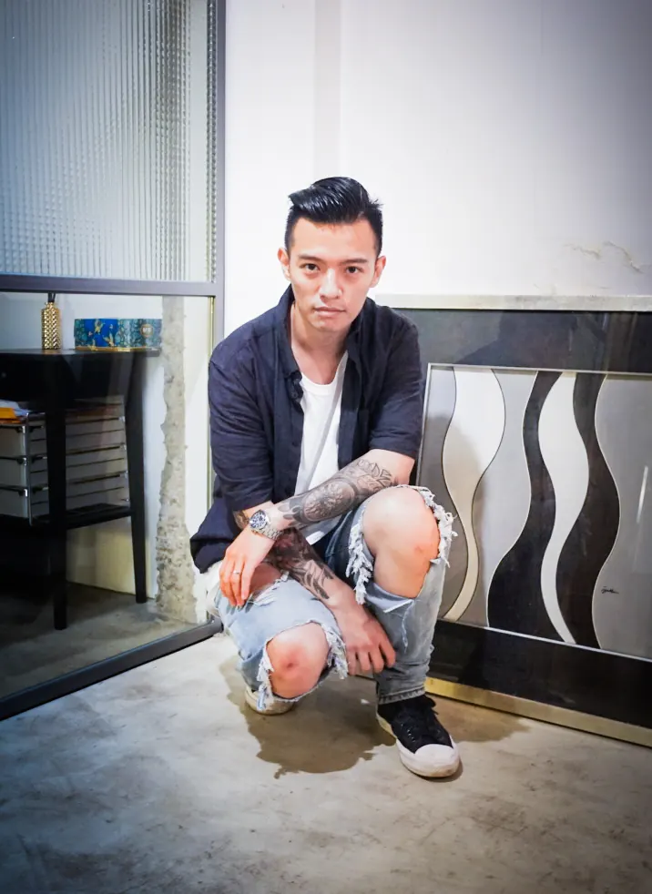

今天訪問到的人物，同時是一名創作人、編曲人、詞曲人，也是和頑童與兄弟本色合作已久的音樂製作人。過去十年，在台灣發行過的嘻哈音樂或舞曲中，有好幾首你聽過的歌都是由他製作或編曲的。他的代表作品包括五月天《派對動物》、MC Hotdog《嗨嗨人生》、兄弟本色《把最甜的都給妳》、大嘴巴《國王皇后》。這次為大家訪問到的人物，就是這位電音和舞曲界的頂尖大師 – 梯依恩 TeN。
梯依恩是跳蛋音樂工廠的早期成員之一，可以說是貢獻於台灣嘻哈與舞曲音樂崛起的其中一名幕後推手。除了與藝人合作以外，也時常受邀製作電玩遊戲和廣告配樂。今年五月上線的黑松汽水 C&C 廣告的電子舞曲，也是由梯依恩幫這次的年度代言人渡邊直美所量身打造的歌曲。本身就很喜歡 sound design 的他，擅長電子、嘻哈、R&B 音樂的創作與電腦編曲，還會研究如何調出獨特的音色。
最早期梯依恩是由玩樂團而開始接觸音樂。如今在嘻哈和電音界打滾多年，來自其他藝人和公司的案子也邀約不斷，音樂早已不知不覺變成他每一天都在做的事情。有別於屬於表演者的音樂人，全職的音樂製作/編曲/創作人可以說是每一天都必須有音樂上的「產出」，不只需要大量的創意，還需要堅持下去的毅力。 而在這些全心投入音樂的幾年中，梯依恩對於音樂與生活之間的平衡，也逐漸磨練出自己的想法與原則。透過這篇專訪，從他的名字的故事，到他的音樂製作經驗以及他對於嘻哈音樂的看法，強力小編今天帶著大家一起更深入地認識梯依恩！
Ｑ：我想很多人都會滿好奇為什麼叫做梯依恩 TeN？
「這個外號跟著我很久了。從國中的時候打球，背號是十號，剛好很多生命中的東西也是十。我的生日、國中也是坐在第十個位置。有些人看到會說怎麼會有這種名字，但反而馬上然後就記住了。（笑）」
近期，梯依恩正在製作頑童的下一張專輯，也會繼續和兄弟本色合作。不過就在八月初，他很難得的在臉書粉絲頁上發表了自己的個人創作作品《GMTRY16Bit 十六分幾何》，邀請他的鼓手好友 Drummer Andy 合作，將真實的爵士鼓聲與電音結合。純音樂的歌曲，搭上Sky Beam、LED燈條等多種媒材的畫面呈現，不論是音樂本身或ＭＶ的拍攝方式，在台灣都是很罕見的新作為，一發出不久就引起熱烈討論和轉發。
Ｑ：可以和我們聊聊近期發的《GMTRY16Bit 十六分幾何》這首個人作品嗎？
（作品網址: https://youtu.be/glNiq6ZO53s）
「這首歌全部都是自己作的音樂和ＭＶ，找了一些身邊不錯的人合作。沒有上架，也沒有跟任何唱片公司談，純粹是自己的想法。沒有任何商業目的，只是為了要滿足自己。我做這件事情的原因是當音樂是個工作的時候，其實很快就會對音樂失去熱情了。你就會一天到晚猜別人要什麼、這個市場怎麼樣，每天都在聚焦在這些事情上，我覺得做到一個時間點，就會發現自己的想法沒有辦法成立而失去熱情。所以我必須去做一些自己喜歡的音樂，讓我覺得對音樂還是有興趣。有一段時間案子沒有那麼多的時候，回到家也不會想開ＤＡＷ來用，不會寫任何歌，因為覺得很痛苦。但是開始做自己的音樂以後，反而重新找回製作音樂的熱忱。」
Ｑ：TeN 做過電玩、廣告、舞曲等各種歌曲或配樂，請問接到新案的時候是否曾遇過瓶頸？有什麼訣竅克服難關？
「你要把你的工作做好，首先就是要收集很多資料，學習很多事情，感受各個不同形容詞給你的感覺。你要為了很多你看到或聽到的東西下情緒上的註解。你在跟客戶溝通的時候他絕對不會跟你講專有名詞。他如果跟你說：我想要一個很「白」的情緒，有「橘子」感覺的音效，很多音樂人可能會傻在那想那是什麼意思。可是，重點就是因為這個是工作，所以我覺得溝通是一件很重要的事情。大家要慢慢的去聚焦，要了解客戶的語言，雙方都要提供 reference，然後慢慢把想要的東西聚焦得越來越近以後，做出來的東西才不會跟對方要的差太多。尤其是你在生活裡頭，一定要對你接受到的任何素材，都要有情緒上的註解。當你有辦法去註解的時候，客戶要甚麼，你就有辦法把它們拼湊起來。
其實做這些配樂，技術還是秒數、分鏡等，都是可以解決的。因為大家都太習慣用老師跟你講什麼東西來決定這個畫面 tempo，但是事實上你要你自己的情緒去感覺現在這一段走到哪裡；差不多是個高潮了、有什麼角色走進來了、他是什麼樣的個性、發生什麼樣的事，你要去揣摩每個角色在裡面幹嘛，你再去挑選你註記的那些情緒跟音階、和弦，放進去。
例如最近上映的電影，《敦客爾克戰役》的配樂很厲害。它很多地方是有強烈作戰的畫面，但是並沒有用大量的銅管或鼓聲來配，他就是很陰沈的弦樂，塑造出不一樣的感覺。那可能就是導演跟配樂有溝通。所以對於畫面要有情緒上的註解。你去科班裡學到的，老師都會拿很多reference，例如魔界。大家就會用既定的印象認為它應該要有什麼聲音，可是其實不一定要這樣。」
Ｑ：TeN 接過那麼多配樂，看電影的時候也會不自覺的注意音樂嗎？
「會看整體的感受。如果有職業病的話會影響自己滿多的。對我來說，我看這個作品是在欣賞整個作品，不是在欣賞這個配樂。有的配樂太強眼的時候會失去那個導演本來想傳達的情緒。我那時候是看整個作品的時候，從頭到尾都沒有出現敵人。沒有敵人真的出現，可是你卻可以從頭到尾都感覺滿緊張的。那一定是有些原因存在，你看完後就會去探討，回想為什麼從頭到尾都感覺那麼緊張。就會感覺其實配樂佔了很大的成分。加上導演鋪陳、分析的方式。我會先被感動到，才會去思考為什麼我會被他感動到。而不是說這個技術很棒，製片很強，用的鏡頭很厲害，我才被感動到。應該反過來才對。很多人看電影都是先用技術、演員的演技，在雪地裡頭爬了五分鐘，的確是很令人敬佩，但是不代表它是一個作品。不能一件某一件事情就代表這個作品是好的。音樂也是，找了一個超強的吉他手來，但是如果bass跟鼓還有vocal都不好聽，但音樂應該也要是全部。創作的人有沒有辦法藉由這個作品的整體性傳達他想要表達的故事跟情緒，被另外一端人聽到。那才是最重要的。」
Ｑ：做電音或舞曲的音源如此多。是否有記住音源的秘訣，以便縮短完成一首歌的時間？

Roland 808 Drum Machine
「其實我從來不用 preset。我的 sound bank 非常多。但是我挑的東西就是，我想要什麼樣的氛圍，就聽。其實沒有任何一個聲音不能使用，只是不會用而已。一開始也沒有人想到 808（Roland 808 Drum Machine） 可以回來變成 hip hop 又變電音。但是就是因為有一個人會運用這個聲音，大家發現很好聽，然後它又回來了。所以對我來說大家都太理論上去製作音樂。很多人會想要把 sound bank 做的很完整很棒，製作許多 preset，但是我從來不搞這些東西。除非真的有一些特定又經常重複的小事，我才會特別去做 preset。像所謂的 Trap Music (編按：一種大量運用 808 以及多重疊軌的音樂，通常Bass都很強烈，歌詞令人不安，旋律會故意使用不安定的和弦)，其實現在也不全然是使用 808 音源，也開始有人使用 sample jazz 的 hi-hat，也是有人用很不好的麥克風收出來的大鼓皮，配上 trigger，聽起來就很像 808，但是它不是。任何聲音都有它的用法，只是你知不知道怎麼用它而已。」
Ｑ：會特別去錄素材放進自己的音樂裡嗎？
「之前有錄過乒乓球的聲音，把它變成一個 loop。之前也有待過一個徒弟，Josh，他就很喜歡用鄉土劇很屌的台詞，把它 sample 起來變成一首歌。我還有用過黑膠。但是因為現在影像素材網站太好用了，其實想要什麼直接上去搜尋。」
（編按：大家可以追蹤梯依恩的 IG，有他最近在自己錄 shaker 聲音的短片喔！）
Ｑ：可以聊聊當初展開音樂製作的故事嗎？從大概幾年前開始製作音樂？
「最早開始摸電腦做音樂是因為我們那時候的樂團想要創作。但是我不會寫譜，所以那時候就用Guitar Pro，就自己編 MIDI，彈一些弦律，後來開始接觸 Reason，然後再學習其他的。樂團解散後，還是有再持續做自己喜歡的東西。剛好那個時候有個同學組嘻哈團，他就找我幫他錄音，我們也會把東西放在網路上給別人聽。後來去錄音室打工時認識頑童。我就自己做一些 beat 給他們唱，也認識了謝和弦，開始了一些合作，把嘻哈跟搖滾結合。那時候 Nokia 有辦一個很大的創作比賽，我們有去參加。其中有一個評審就是阿弟仔，也就是那個時候認識了他和 Daniel。我還記得那時候就約在一家咖啡廳，開始聊為什麼我會做音樂。那時候跳蛋才剛開，只有一個員工，就是棉花糖的聖哲，後來我就簽給他們了。我就開始在跳蛋跟著 Daniel 老師學音樂製作。他們會有一些製作跟編曲發下來給我們。第一首編的是《快樂幫》的案子。後來陸陸續續接到更多案子，也開始做大嘴巴的編曲和製作。大概五六年前，想自己出來闖，就開始自己做兄弟本色那邊的案子。」
Ｑ：TeN 以前玩過樂團，覺得跟電腦作音樂最大的差異是什麼？就您的經驗而言，電腦作音樂最難的部分是什麼？
「用電腦做音樂很詬病的事情，就是大家都是在用看的在做音樂。可是其實音樂是用聽的。回想起來，我覺得當時玩樂團在刷和弦上自己的歌的時候，那個是最直接讓我覺得很開心的。可是後來用電腦做音樂，花了很多時間看軟體教學，也聽很多技巧什麼的。發現到最後大部分都是在『看』音樂——看你的畫面漂不漂亮、plugin 掛的屌不屌、效果做得好不好等等。其實到最後失去了很多聽覺上的敏感度。這是我覺得最大的差別。所以到這兩年開始我又開始拿回樂器，很直接地下和弦，去抓感覺出來。」
Ｑ：作曲的順序/方式？靈感來自哪裡？
「最近寫歌喜歡腦袋裡要先有故事。想像現在要拍一支ＭＶ，要什麼樣的內容與議題？個人的創作，都是自己打從心底覺得這很帥，不是某某人喜不喜歡，或市場喜不喜歡。像前幾天看了一部影集叫黑鏡，有一集，有一個不一樣的世界觀。那時候看完之後心裡頭覺得很感動，因為它巧妙融合七八零年代的元素和故事在裡面。後來我就以那樣的世界觀去想像我現在的這個人，當時影響我最大的事是什麼？假設我把那個事擺在那樣的世界觀裡，我會決定用什麼樣的立場去做角色設定？第一人稱還是第三人稱？把這個故事呈現出來後就會開始想像，那個世界觀的音樂會是什麼樣，去把當時那個氣氛的感覺做出來。和弦的下法想要有快樂裡頭帶一點點寂寞，就會去找那樣的和弦。甚至轉位去感覺，去組合出一個小節，再組合成四個，八個，你就會聽到這個氛圍是我要的。先把大致的東西做出來以後再把裝飾的東西放進去。裝飾是來自你做這行的經驗。
今天出的這首個人創作是因為看了一個 live 之後，我被那個 vocal sample （編按：這是一種主唱取樣技術，先找來主唱唱歌，再運用 Auto-Tune 等音高軟體調整音高並作大幅失真的後製，將其儲存起來變成一種音源，再以鍵盤或是其他方式 Trigger 出來，簡單來說就是把人聲當做一種樂器的技巧) 的東西很著迷。那個時候（去年）剛出完車禍，休息一段時間。我習慣邊睡覺邊聽音樂。有一次有一段東西跑到夢裡，醒來以後就做出這個。自然而然就成形了，完全沒有去想說我想要像誰一樣。你的主題是什麼，是以自己為主。」
Ｑ：從 2007 年接觸嘻哈音樂的製作至今，對於台灣嘻哈音樂市場的演變和現況有什麼看法嗎？
「我覺得其實嘻哈在 2000 年之後，它在這個世界上就是一個娛樂，不再是個文化。這個文化已經被商業化。這文化一出來的時候，一定要有周邊的東西，例如服裝、講話方式、音樂、表演、飲食。有很多人同時在擁護這個文化的時候，它自然就變成商業了。
但是我覺得這個東西在台灣從 2010 年開始變得很像 cosplay，很多人並不是發自內心想傳達事情，都是在模仿別人說話和表達、穿衣服。當一個嘻哈名人帶一個圓盤帽，全世界的人都在帶一個圓盤帽。Joey Badass 最近綁了辮子頭，滿街小孩就跟著綁，饒舌也是在模仿。最近饒舌流行三連音，大家就會跟著模仿，而不是在創造屬於自己的東西。文化被數位時代綁住，大家不願意出門。大家又一直傻傻的以為，我只要持續這樣(模仿別人)我就有市場。但是事實上有沒有市場，那不是你們在這邊表現一個 lifestyle 然後等待，市場就會成長。大家需要的，是嘻哈相關的事件，它才會成長。例如『中國有嘻哈』或是之前做的『橋下』嘻哈派對活動。大家需要這些事件，而不是去模仿 MV 裡頭那個模樣。你需要的是讓人群覺得某一樣事情很好玩，把事情搞大搞熱。雖然這個也是一個商業手法，但很有趣的是，有人做出事件來，炒起來，就會另外一派人反擊它，或有新的創意出現。
對於年輕人而言，要去激發自己的創意這件事情本來就是不容易的。因為當初啟蒙他們的人，或許就是某個嘻哈界的知名人士。但很多我們從電視上看到的，是一個不存在的 lifestyle，我不相信嘻哈歌手們以前在打工的時候態度可以像在饒舌那樣直接。你穿得再嘻哈，走路再秋，講話再有態度，回到你現實生活中你還是要工作，你跟你老闆不可能講一些沒禮貌的話。你只能跟你朋友用自己喜歡的講話方式對話。這個事情就像韓劇一樣，演一個不存在的韓劇給女生看。跟A片一樣，演一個不存在的性愛給男生看。電視上看到的嘻哈也是一樣，塑造一個偶像文化、一個不存在的 lifestyle 給小孩看。拿槍、一堆 squad (編按：squad 指『死黨/好哥們/好姐妹』的流行用語），穿衣服很怪的妹，好像大家都很有態度。聽起來不像在 cosplay 嗎？可是還是要老老實實工作。不吃飯還是會餓死。在台灣尤其是這樣，但在歐美，很常是唱片公司看到有一個新的文化要崛起，看到一群人有想法，趕快跟他們合作，把他們當作老闆。台灣的唱片公司可能還沒找到一個好的方式操作這樣的事情。」
Ｑ：TeN 現在也是艾克斯的行銷總監，有許多成員都是您找進來的。在尋找製作人甚至是藝人時，會特別注意什麼特質嗎？
「每個人狀況不一樣。我比較會看這個人有沒有創造力。有的人很有想法，但是沒有創造力跟執行力的時候其實滿恐怖的。很多天份不錯的人，都喜歡用天王級的規格要求別人與看待自己。但其實，真正的天才你給他一個木棍他會變出一個彩虹冰。例如陳星翰就是讓我看到這個才華。當時他做音樂的電腦完全壞掉不能用，他借用我的電腦，開了一些最基礎官方送的東西，可是做出一個超屌的 beat，我從這點看到了他的天份。在選人上，我通常還是會看是否欣賞他們的作品，能否溝通的來。即使聽到歌時還稱不上非常厲害，但是可以感覺他們作品有很直接的想法，我喜歡聽那種東西。」

Ｑ：一天會花很長的時間製作音樂嗎？
「我是從寫歌，編曲，錄音，editing，混音，都會自己做。要很長時間做完一個東西我可以。可是如果是我自己的創作的話，我會花很多時間聽音樂。而且要聽新的，不能聽自己聽過的。讓新的東西跑到腦子來，才不會活在以前聽過的歌裡。例如我小時候其實沒有很喜歡 Aqua，現在回去聽突然覺得超好聽。還有聽 Michael Jackson，披頭四精選輯。但是那段時間過了就去聽別的了。不排斥聽的曲風，只要喜歡就會聽。」
Ｑ：TeN 有製作自己的作品，還有接很多的案子。平常會如何去分配時間？
「時間是自己要去選擇。有的人一聽到是工作就先接下來再說。但有時候你在選擇事情的時候，要有自己的 schedule。你可能要知道每個禮拜花百分之多少的時間陪家人、工作。有很多人都會因為有大咖找上門就先接下來，甚至犧牲掉自己的私人時間。我其實覺得你在接工作這件事情的時候，你一定要把你的 schedule 攤開來看。每個月，一定要先把經營自己的時間先確定好、陪家人的時間確定好、人生中最重要的事情先處理好。因為大家往往都會顛倒這件事情的先後順序。人生最重要的事情是你的家人、你的愛人，你自己的人生快不快樂？你有沒有辦法把你的健康照顧好？這件事情是我覺得人生最重要的事情。工作、成就，其實是其次。大家很多人剛出來做的時候都會顛倒這件事情，接很多大咖的案子，把工作填滿滿。但是我走這樣一圈回來以後發現，沒有什麼改變，就是賺到錢，也許賺得比別人多一些。但是人並不會因為這樣而改變。你應該先把自己照顧好，把照顧好自己的時間點先放進行程裡。當音樂工作進來的時候，你才能去分配你禮拜幾不用陪家人，我就那幾天可以工作。但是一旦你決定那天要工作，就要很專心很有效率的把它做完。
做音樂，應該用最精簡的方式。我常常拿到別人的檔案的時候會發現有很多沒有必要的音階、plugin，例如同顆大鼓疊五顆。一顆就夠了。想一堆很複雜的事情讓自己的工作時間增加。我覺得大家在工作的時候應該要學著怎麼減，怎麼把事情精簡到你可以用最快的速度把事情完成。工作就會有效率，有更多時間做別的工作，但是千萬不要擠壓到自己的人生，因為你的生命就只有一次。我通常會趁通勤時間騎腳踏車，規劃自己每天睡八小時。盡量去追求自己的 schedule，任何事情一定有變通方法。」
Ｑ：可以聊聊在近期的作品中，有哪一個令你感到特別有成就感或印象深刻的嗎？
「自己的每一首都很有成就感。（笑）案子的話兄弟本色的《鐵皮屋》跟《搞砸》，這兩首beat超級屌。」
Ｑ：做音樂的初心？
「這件事情很單純。就是 Have Fun。做音樂做到有壓力的時候，創作不出東西來的時候就會覺得學那麼久音樂有什麼用？」
小編後記
也許對於嘻哈文化的解釋，每個人有不同的看法。同樣在嘻哈音樂圈裡的人，也不見得會有一致的定義與觀點。但或許他們會有的共識是，真正的嘻哈音樂人，並不是要為了得到認同而去追隨某個文化；不必為了成為文化的一部份而去模仿或盲從某一個偶像。很多時候我們可能忘了，螢光幕上看到的大部分是添加了表演效果的表象，但是那些不一定是表演者生活的常態。過度琢磨在表象，很可能會忘記它最原始的核心價值。
同時，從他多年奮鬥於音樂製作領域的經驗中，梯依恩不斷地提醒著我們，當音樂製作變成是每一天的工作的時候，還是要適度調整自己的心態和時間，不要忘記當初玩音樂的那份快樂。不論是承接案子還是個人的創作，都要樂在其中。但前提是要先把自己照顧好，事先安排好陪伴重要的人的時間及工作的時間，才能在這條路上走得更遠，看得更清楚。
＊有興趣多了解梯依恩的編曲方式嗎？11月他將會在 @大禾音樂製作 主辦的講座，進行他的第二期電子音樂編曲班，趕快來報名喔！＊
➡️➡️ http://shopping.harvestmusician.com/index.php?route=product/product&product_id=125